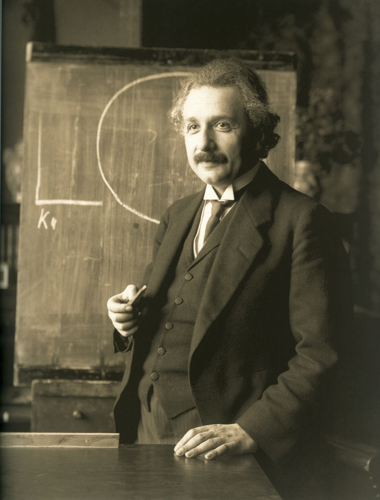
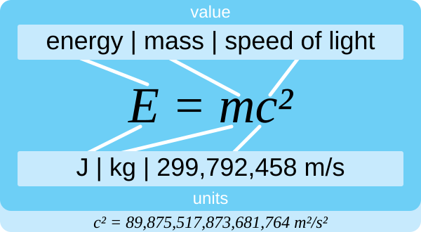

Szczególna teoria względności (STW) została opublikowana przez
Alberta Einsteina w 1905 roku – w tym samym „cudownym roku”, w którym
powstały także prace o efekcie fotoelektrycznym i ruchu Browna.
Teoria opisuje zjawiska fizyczne zachodzące w układach inercjalnych,
czyli takich, które poruszają się względem siebie ze stałą prędkością,
bez udziału grawitacji.
Zanim Einstein opublikował swoje prace, fizycy zakładali istnienie
eteru – hipotetycznego ośrodka, w którym miało rozchodzić się światło.
Eksperyment Michelsona–Morleya (1887) nie wykazał jednak żadnego ruchu
Ziemi względem eteru. Einstein rozwiązał problem, odrzucając eter
i przyjmując dwa proste postulaty, z których wyniknęły zaskakujące
konsekwencje: czas płynie inaczej dla obserwatorów w ruchu, długość
ciała się skraca, a masa i energia są sobie równoważne.

Albert Einstein (1879–1955) – autor szczególnej teorii względności.
Dwa postulaty Einsteina
Cała teoria opiera się na dwóch założeniach, które – choć brzmią
niewinnie – prowadzą do całkowitej zmiany rozumienia czasu
i przestrzeni.
Zasada względności: prawa fizyki są takie same
we wszystkich inercjalnych układach odniesienia. Nie istnieje
wyróżniony, „absolutny” układ, względem którego można by mierzyć
ruch.
Niezmienność prędkości światła: prędkość światła
w próżni wynosi dokładnie c ≈ 299 792 458 m/s i jest taka
sama dla wszystkich obserwatorów, niezależnie od ich ruchu
względem źródła światła.
Drugi postulat jest szczególnie nieintuicyjny: gdy biegniesz
w stronę latarki, światło i tak dociera do Ciebie z prędkością
c, a nie c + Twoja prędkość. Aby to pogodzić,
Einstein musiał zrezygnować z absolutnego czasu i absolutnej
przestrzeni.
Efekty relatywistyczne
Z dwóch postulatów wynikają konsekwencje obserwowalne w eksperymentach:
dylatacja czasu, skrócenie długości oraz względność jednoczesności.
Wszystkie one zależą od współczynnika Lorentza
γ = 1 / √(1 − v²/c²), który dla małych prędkości jest
bliski 1 i dlatego w codziennym życiu tych efektów nie zauważamy.
Dylatacja czasu
Czas płynie wolniej w układzie poruszającym się względem
obserwatora. Zegar na pokładzie szybkiej rakiety tyka wolniej niż
zegar na Ziemi. Wzór: Δt = Δt₀ · γ,
gdzie Δt₀ to czas zmierzony w układzie spoczynkowym
obiektu.
Przykład: miony powstające w górnych warstwach atmosfery „żyją”
zaledwie 2,2 μs, a mimo to docierają do powierzchni Ziemi –
właśnie dzięki dylatacji czasu.
Skrócenie długości
Obiekt poruszający się względem obserwatora wydaje się krótszy
w kierunku ruchu. Wzór: L = L₀ / γ.
Efekt jest odwrotnością dylatacji czasu – skoro czas płynie inaczej,
musi też zmieniać się mierzona długość.
Względność jednoczesności
Dwa zdarzenia, które dla jednego obserwatora zachodzą
jednocześnie, dla innego mogą zachodzić w różnym czasie. Nie ma
uniwersalnego „teraz” – jednoczesność zależy od układu odniesienia.
Równoważność masy i energii
E = mc²
Najsłynniejszy wzór fizyki mówi, że masa i energia są dwiema
postaciami tej samej rzeczywistości. Każde ciało o masie m
ma „zapas” energii spoczynkowej równy mc², nawet jeśli się
nie porusza. Ponieważ prędkość światła jest ogromna (≈ 3·10⁸ m/s),
nawet gram materii odpowiada energii ok. 9·10¹³ J – czyli około
21 kilotonom trotylu.
Wzór wyjaśnia, dlaczego Słońce świeci (masa jąder atomowych zamienia
się w energię podczas fuzji), dlaczego bomby jądrowe są tak potężne
oraz dlaczego cząstki w akceleratorach zachowują się inaczej niż
wynikałoby to z fizyki klasycznej.

Równoważność masy i energii – najbardziej rozpoznawalny wzór fizyki.
Ciekawostki
GPS bez STW by nie działał. Zegary w satelitach
GPS poruszają się z prędkością ok. 3,9 km/s, a do tego znajdują się
w słabszym polu grawitacyjnym. Bez poprawek relatywistycznych
(kilkadziesiąt mikrosekund dziennie) pozycja wyliczona przez GPS
myliłaby się o kilkanaście kilometrów po jednym dniu.
Paradoks bliźniąt. Jeden z bliźniaków zostaje na
Ziemi, drugi wyrusza w podróż z prędkością bliską c.
Po powrocie podróżnik jest młodszy od brata – efekt potwierdzony
eksperymentalnie na zegarach atomowych w samolotach.
Prędkość światła jest nieprzekraczalna. Im szybciej
porusza się ciało, tym trudniej je dalej rozpędzić – jego
„relatywistyczna masa” rośnie i energia potrzebna do osiągnięcia
c dąży do nieskończoności.
Miony z kosmosu. Powstają ok. 10 km nad Ziemią
i „żyją” 2,2 μs – bez STW nie powinny dolatywać do powierzchni,
a jednak docierają. To jeden z pierwszych dowodów na dylatację czasu.
Sprawdź swoją wiedzę
Krótki quiz sprawdzi, czy rozumiesz podstawowe pojęcia szczególnej
teorii względności. Zostanie udostępniony w kolejnym etapie projektu.